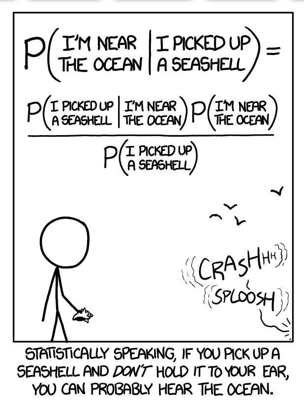

454 Bayesian Statistics Project - College Ranking
Chapter 1 Preface
Hello! Welcome to the bookdown of our MATH 454 Bayesian Statistics Project!
We are having a lot of fun doing this project, and you are always welcome to come back at any point for our progress!

Credit to xkcd: https://xkcd.com/1236/